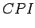
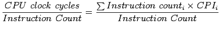
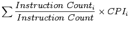
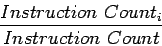
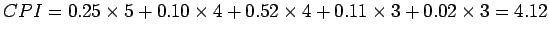

ในการทดสอบประสิทธิภาพของโปรเซสเซอร์แบบหลายวงรอบสัญญาณนาฬิกา โดยใช้ SPECTINT2000 มีส่วนประกอบของคำสั่งดังต่อไปนี้ 25% load (1% load byte + 24% load word), 10% stores ((1% store byte + 9% store word), 11% branches (6% beq, 5% bne), 2% jumps (1% jal + 1%jr), และ 52% ALU จงคำนวณ CPI ของโปรเซสเซอร์แบบหลายวงรอบสัญญาณนาฬิกา
ในคำสั่งต่างๆ มีจำนวนวงรอบการทำงานดังต่อไปนี้
CPI สามารถแสดงได้โดย
|  |  | (5.6) | |
|  | (5.7) |
โดยที่อัตราส่วน
|  | (5.8) |
เป็นความถี่ของคำสั่งสำหรับคำสั่งชุด  เราสามารถแทนที่สมการได้
เราสามารถแทนที่สมการได้

จะพบว่าค่า CPI ที่คำนวณได้ดีกว่า CPI สำหรับกรณีที่แย่ที่สุดคือ 5.0 ที่ทุกคำสั่งทำงานที่จำนวนวงรอบสัญญาณนาฬิกาเท่ากันทั้งหมด
การออกแบบชุดควบคุมโปรเซสเซอร์แบบหลายวงรอบการทำงานนั้น ทำโดยใชั Finite State Machine ซึ่งผลลัพธ์ของวงจรดังกล่าวเป็นการทำงานที่ใช้สถานะของวงจรประกอบในการทำงาน ที่ซึ่งผลของสถานะปัจจุบัน จะขึ้นอยู่กับสถานะการทำงานในวงรอบการทำงานที่แล้ว และสัญญาณอินพุทที่ป้อนเข้า โดยในที่นี้สัญญาณอินพุทคือ Opcode ที่ปรากฎในคำสั่งนั้นเอง รูป 5.31 แสดงการทำงานระดับสูงของการควบคุม Finite State Machine โดยการทำงานเริ่มจากการ Fetch คำสั่ง และแบ่งการทำงานออกเป็น 4 สาย เพื่อให้สามารถทำงานตามลักษณะต่างๆ ได้ซึ่งคำสั่งดังกล่าวไแบ่งเป็นกลุ่มได้แก่ Memory Access, R-Type, Branch, Jump
จากรูป 5.32 แสดง Finite State Machine ที่นำมาใช้งานในชุดควบคุม
รูป 5.33 แผนภูมิแสดงสถานะ (State Diagram) สำหรับชุดควบคุม ที่มีขั้นตอนดังต่อไปนี้